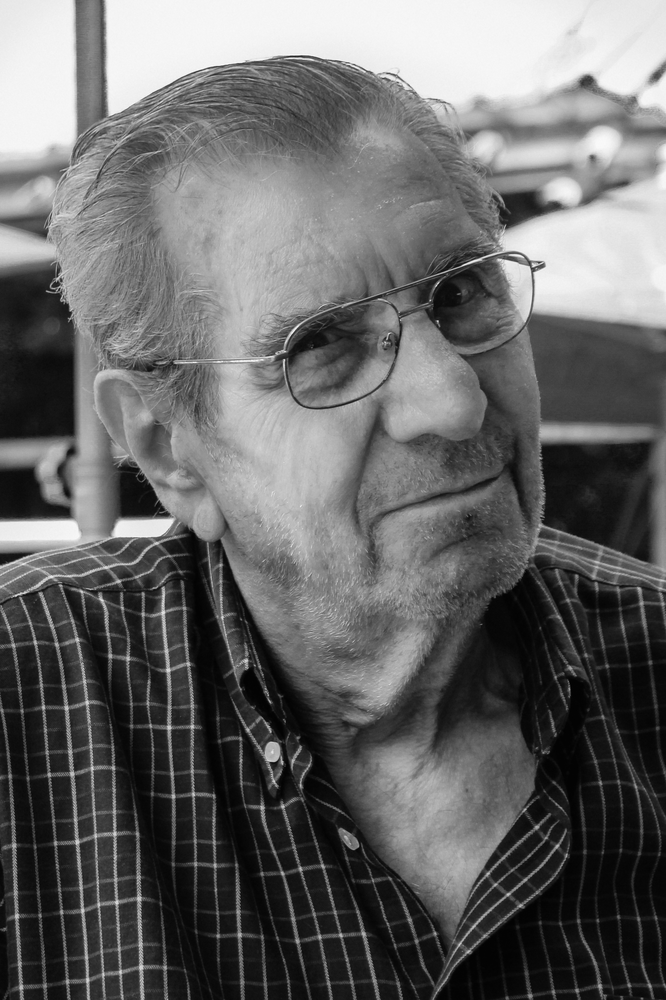
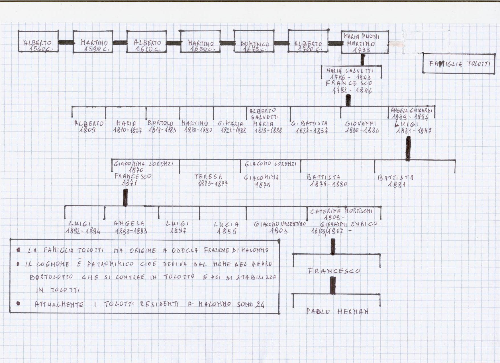
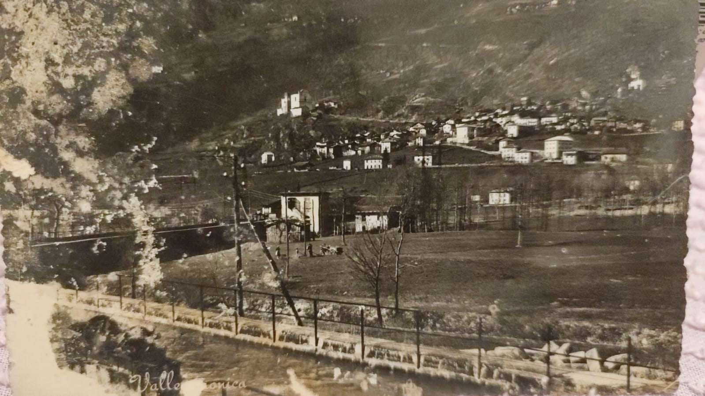
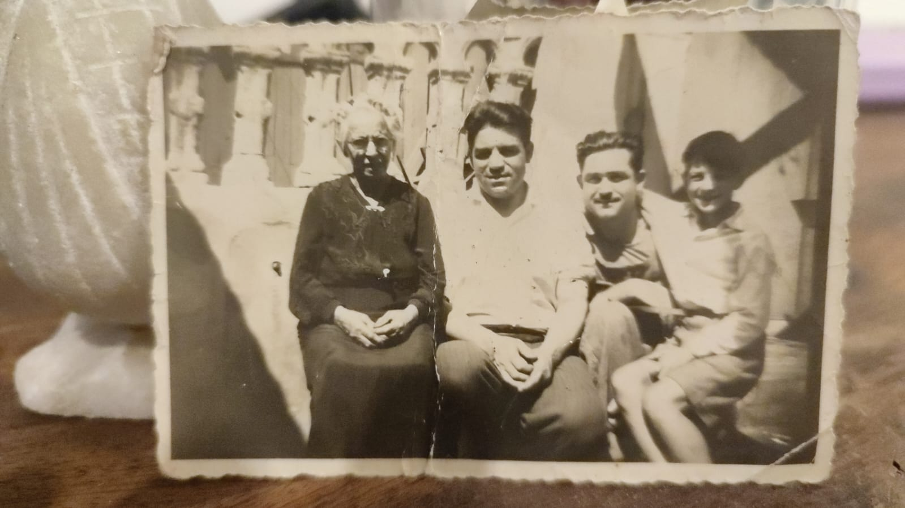
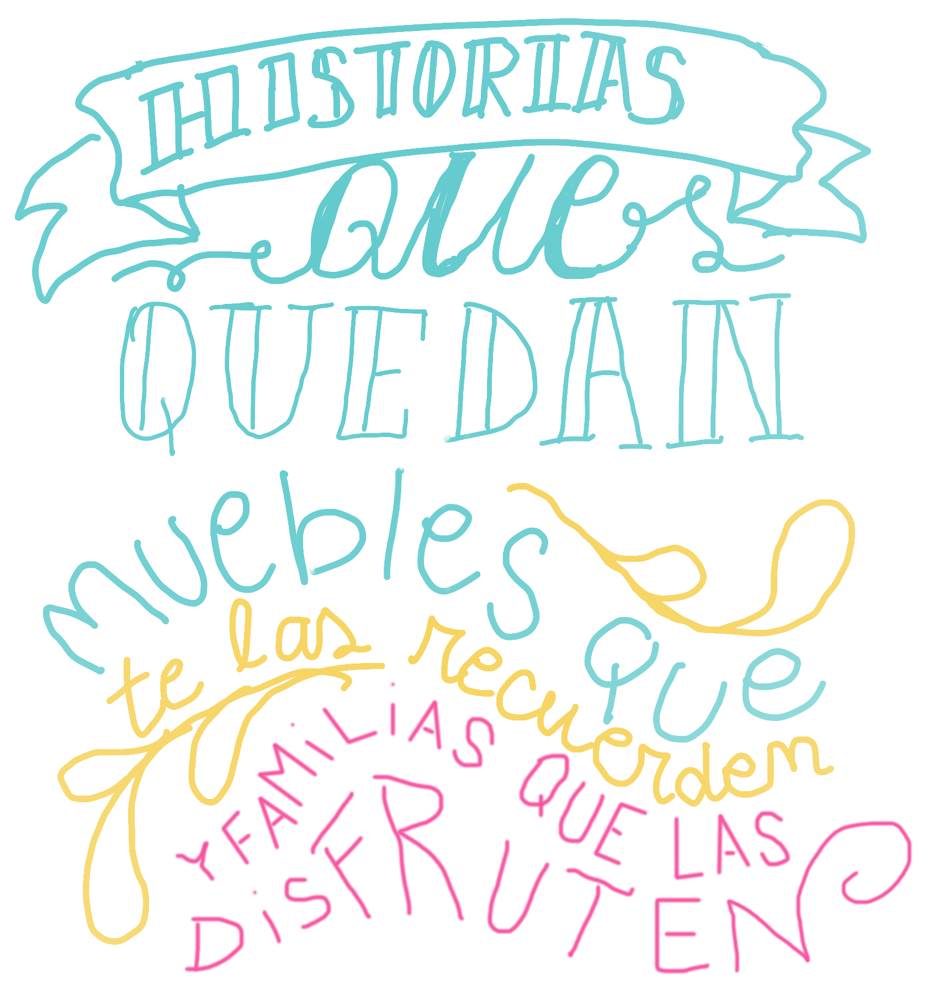

MAESTRO ebanista
Hermano mayor

Hermano mayor


Hermano menor

Provincia de Brescia, Italia

Dicen que, mucho antes de que fuera un taller, aquella casa había sido un conventillo de italianos. Habitaciones pequeñas, puertas que daban a un mismo patio y familias que se cruzaban a diario entre ropa tendida, ollas al fuego y conversaciones en italiano. Era una casa ruidosa, trabajadora y llena de vida. Con los años, las familias fueron dejando el lugar y la casa cambió de manos. Pero algo de aquel espíritu quedó. Donde antes se compartían comidas y se arreglaban las cosas entre vecinos, empezó a funcionar un pequeño taller de carpintería y ebanistería. La madera comenzó a reemplazar al murmullo del patio: serruchos, martillos, viruta y ese olor inconfundible de la madera recién cortada. El taller fue creciendo de a poco, pero siguió siendo, ante todo, una casa familiar. Un lugar donde se trabajaba, se aprendía y se pasaban los días. Y fue ahí, entre maderas, herramientas y movimiento, donde nació Kitry. Kitry llegó al mundo junto a su hermana Lala y, sin saberlo, se convirtió en una parte inseparable de la historia de los Tolotti. Durante muchísimos años acompañó a la familia: estuvo en el taller, en la casa, en los días de trabajo y en los momentos más simples. Creció al mismo tiempo que crecían las personas, los proyectos y la familia. Por eso, cuando se recuerda aquel lugar, no se recuerda solamente como un antiguo conventillo convertido en carpintería. Se recuerda como una casa que fue cambiando con quienes la habitaron y que, entre madera, herramientas y perros corriendo por ahí, terminó convirtiéndose en parte de la historia de los Tolotti. Y quizá sea esa la verdadera historia del taller: que antes de ser un lugar donde se hacía muebles, fue un lugar donde se hizo familia.



